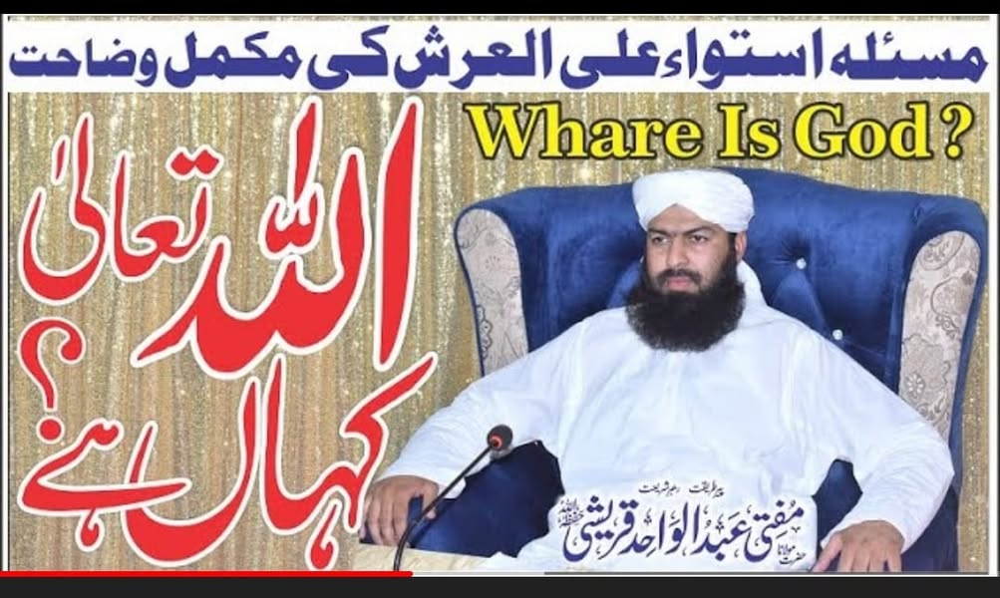

আল্লাহ'র সত্তা সর্বত্র বিরাজমান!
৩১ জুলাই, ২০২২
আল্লাহ'র সত্তা সর্বত্র বিরাজমান!
-মুফতি আব্দুল ওয়াহিদ কুরেশি (পাকিস্তান)
ইনি পাকিস্তানের প্রসিদ্ধ আলেমদের একজন। আমরা যারা তাদের থেকে আকিদাহ'র সবক নিই, একটু সতর্ক হই।
আহলেসুন্নাহ'র আকিদাহ'র নামে আমরা জাহমি আকিদাহ গ্রহণ করছি কি না একটু ভাবি।
সর্বত্র বিরাজমানতার আকিদাহ এমন এক কুফরি আকিদাহ, যা ইসলাম থেকে খারিজ হওয়ার জন্য যথেষ্ট। আছারিদের কথা বাদ; আশআরি-মাতুরিদি কোনো বিজ্ঞ আলেমদের আকিদাহ এটি নয়। হতে পারে না। অর্থাৎ সর্বসম্মতিক্রমে এটি আহলেসুন্নাহ'র আকিদা নয়; বরং জাহমিদের আকিদাহ।
গত বছর ইলিয়াস গুম্মান পাকিস্তানির এ আকিদাহ নিয়ে সমালোচনা করেছিলাম এবং কয়েক পর্বে তার দলিলভিত্তিক খণ্ডনও করেছিলাম। তখন ভেবেছিলাম, হয়ত তিনি একাই এ মতের পক্ষে। কিন্তু ভুল ভাঙল আব্দুল ওয়াহিদ কুরেশির বক্তব্য শুনে। এমন আকিদাহ'র প্রচারক হয়ত আরও অনেক রয়েছে। সতর্ক হোন। নিজের ঈমান বাঁচান।
